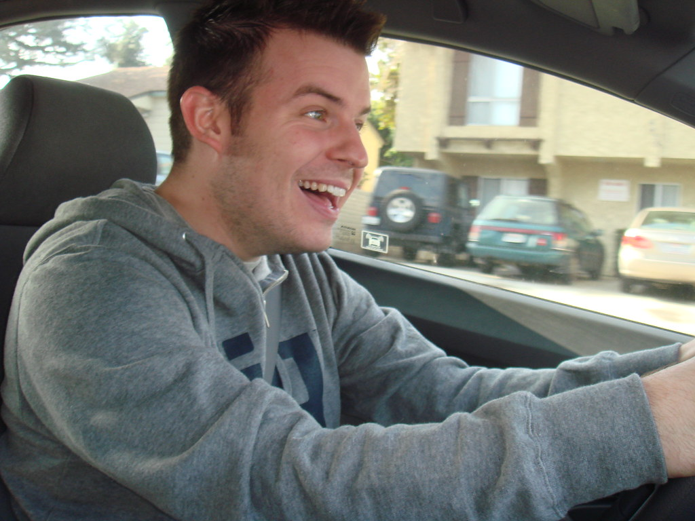

Tired of Driving Like a Chump? Drive Like a Champ!

It seems like everyone is terrible at driving. What's so hard? Push a button with your
foot, turn a wheel in the front. OOOOO, so scary. That's what the general population
thinks. You're better than the general population. You are not a chump.
You are a champ.
Follow this recipe, and you are sure to be envy of the road for how fearlessly you drive.
For this recipe, you will need:
Directions
- Drive.
- Let everyone know you are a better driver by honking the horn any time another car
is visible. They will gasp at how impressively you can drive.
- A fellow driver displaying their middle finger is driver speak for "Holy cow,
did you get to be such an amazing driver? Can you show me how to display the
winning spirit?"
- Smile and display your middle finger, which is driver speak for "Perhaps another
time, my friend!"
View Our Other Recipes